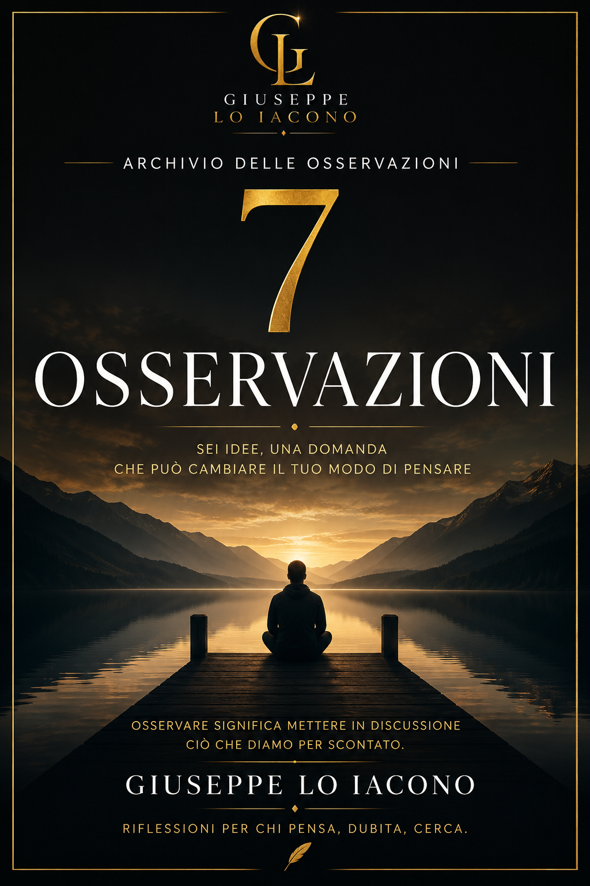

Volume 001
7 Osservazioni
Sei idee, una domanda che può cambiare il tuo modo di pensare.
Sei osservazioni indipendenti e una domanda conclusiva attraversano comportamento umano, convinzioni e percezione della realtà. Un percorso breve, costruito per mettere in discussione ciò che spesso accettiamo senza più osservarlo.
Disponibile su Payhip
Scopri il volume